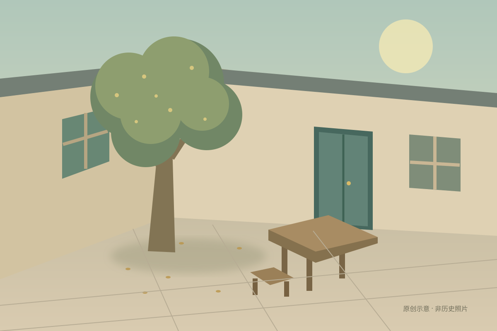

合成口述 · 无私人照片
来源 S1：「桂花树在左边。」
来源 S2：「门好像是绿色的。」
来源 S3：「我记得门是褪色的蓝色。」
固定演示文字。年代、视角和冲突需要继续核对。
公开静态素材板 · 合成案例，非真实生成结果。多人同步仅在本地后端实现，本页不提供远程共享服务。

原创 SVG 与 WebGL 程序院子共用视觉语言。用于示例和加载失败备用内容，不是历史照片或生成结果。
我们一起记得的地方。
清晰的日常文字，让每个人都能补上一句。
标题使用系统宋体；界面使用系统无衬线。无需外部字体请求。
04 / INTERFACE LANGUAGE事实与推测、真实与示例，都清楚地呈现在界面上。
以下是一条合成案例的工作链。尚未接通的环节如实留空；箭头表示流程，不表示已经完成真实生成。
来源 S1：「桂花树在左边。」
来源 S2：「门好像是绿色的。」
来源 S3：「我记得门是褪色的蓝色。」
固定演示文字。年代、视角和冲突需要继续核对。
院子的左边有一棵桂花树。[S1]
门的蓝 / 绿描述待核对。[S2, S3]
尺寸、隐藏结构未确定，不能当作历史事实。确认时保存描述和来源快照。
口述生成的参考图将标为推测；不代替历史照片，也不反过来作为事实来源。
上图是原创视觉素材，非第三步产物。WebGL 院子可移动探索，几何不随描述改变。真实 World Labs 输出待验证。
回忆、图片、来源与待确认问题放在同一个工作区里。
真实成员与同一份保存记录；不制造虚假的在线角色。
收集 → 核对 → 确认 → 探索。没有照片时，保留推测标记。
素材出处：本板的 icon.svg、courtyard.svg 与 viewer.js 均为本项目原创；案例文字为合成资料。独立 SPZ 技术验证页另使用 Niantic 的 MIT 授权公开样例，附来源和许可证；它不是 Tripothon 的世界生成结果。